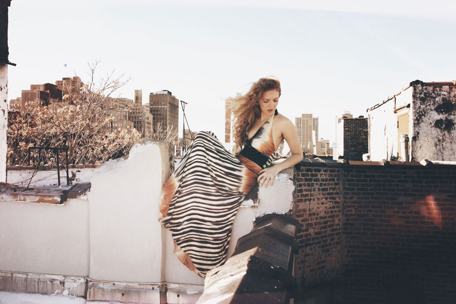
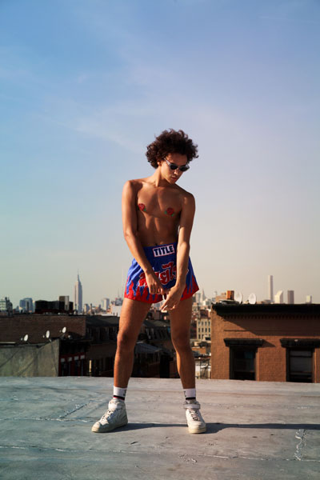
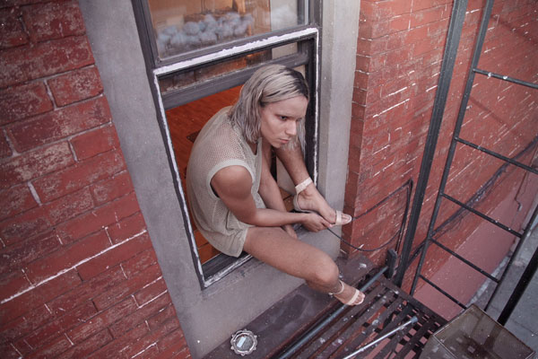

Anbe Baccam is a photographer currently residing in New York City. Hailing from Saigon, Vietnam, he moved to United States at 12 years old. With a Bachelors in Art from Florida International University, his main focus has always been photography. Baccam's love for photography came at a young age, but with more understanding and time, it has become his life and obsession. For Baccam, photography is more than just an attempt to capture a perfect moment or posed subject. It is a visual map of experiences and feelings.